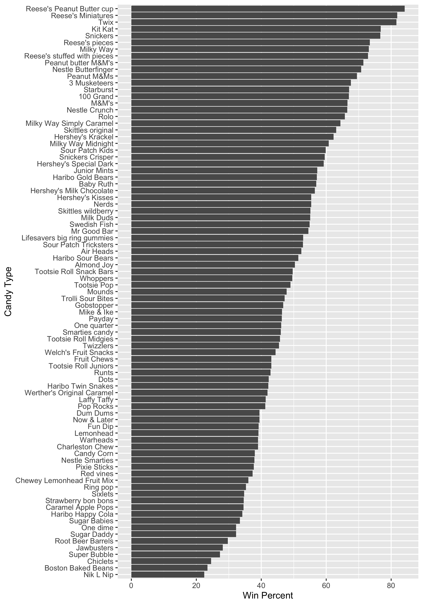

Class 09 Mini Project - CANDY
First, we are going to need to download the data by using some commands!
<- "candy-data.txt" = read.csv (candy_file, row.names= 1 )head (candy)
chocolate fruity caramel peanutyalmondy nougat crispedricewafer
100 Grand 1 0 1 0 0 1
3 Musketeers 1 0 0 0 1 0
One dime 0 0 0 0 0 0
One quarter 0 0 0 0 0 0
Air Heads 0 1 0 0 0 0
Almond Joy 1 0 0 1 0 0
hard bar pluribus sugarpercent pricepercent winpercent
100 Grand 0 1 0 0.732 0.860 66.97173
3 Musketeers 0 1 0 0.604 0.511 67.60294
One dime 0 0 0 0.011 0.116 32.26109
One quarter 0 0 0 0.011 0.511 46.11650
Air Heads 0 0 0 0.906 0.511 52.34146
Almond Joy 0 1 0 0.465 0.767 50.34755
We are going to answer questions along the way!
Q1. How many different candy types are in this dataset?
There are 85 different candies in the data set.
Q2. How many fruity candy types are in the dataset?
There are 38 candies that are fruity.
Q3. What is your favorite candy in the dataset and what is it’s winpercent value?
#Win percent for Twix "Twix" ,]$ winpercent
For my favorite candy, I like Sour Patch Kids.
"Sour Patch Kids" ,]$ winpercent
Q4. What is the winpercent value for “Kit Kat”?
"Kit Kat" ,]$ winpercent
Q5. What is the winpercent value for “Tootsie Roll Snack Bars”?
"Tootsie Roll Snack Bars" ,]$ winpercent
Bonus Question For fun let’s find the lowest ranked candy!
<- order (candy$ winpercent)head (candy[inds, ])
chocolate fruity caramel peanutyalmondy nougat
Nik L Nip 0 1 0 0 0
Boston Baked Beans 0 0 0 1 0
Chiclets 0 1 0 0 0
Super Bubble 0 1 0 0 0
Jawbusters 0 1 0 0 0
Root Beer Barrels 0 0 0 0 0
crispedricewafer hard bar pluribus sugarpercent pricepercent
Nik L Nip 0 0 0 1 0.197 0.976
Boston Baked Beans 0 0 0 1 0.313 0.511
Chiclets 0 0 0 1 0.046 0.325
Super Bubble 0 0 0 0 0.162 0.116
Jawbusters 0 1 0 1 0.093 0.511
Root Beer Barrels 0 1 0 1 0.732 0.069
winpercent
Nik L Nip 22.44534
Boston Baked Beans 23.41782
Chiclets 24.52499
Super Bubble 27.30386
Jawbusters 28.12744
Root Beer Barrels 29.70369
Looks like something called Nik L Nip is the least favorite candy in the datas et!
There is a useful function called skim() in order to get an overview of your data.
library ("skimr" )skim (candy)
Data summary
Name
candy
Number of rows
85
Number of columns
12
_______________________
Column type frequency:
numeric
12
________________________
Group variables
None
Variable type: numeric
chocolate
0
1
0.44
0.50
0.00
0.00
0.00
1.00
1.00
▇▁▁▁▆
fruity
0
1
0.45
0.50
0.00
0.00
0.00
1.00
1.00
▇▁▁▁▆
caramel
0
1
0.16
0.37
0.00
0.00
0.00
0.00
1.00
▇▁▁▁▂
peanutyalmondy
0
1
0.16
0.37
0.00
0.00
0.00
0.00
1.00
▇▁▁▁▂
nougat
0
1
0.08
0.28
0.00
0.00
0.00
0.00
1.00
▇▁▁▁▁
crispedricewafer
0
1
0.08
0.28
0.00
0.00
0.00
0.00
1.00
▇▁▁▁▁
hard
0
1
0.18
0.38
0.00
0.00
0.00
0.00
1.00
▇▁▁▁▂
bar
0
1
0.25
0.43
0.00
0.00
0.00
0.00
1.00
▇▁▁▁▂
pluribus
0
1
0.52
0.50
0.00
0.00
1.00
1.00
1.00
▇▁▁▁▇
sugarpercent
0
1
0.48
0.28
0.01
0.22
0.47
0.73
0.99
▇▇▇▇▆
pricepercent
0
1
0.47
0.29
0.01
0.26
0.47
0.65
0.98
▇▇▇▇▆
winpercent
0
1
50.32
14.71
22.45
39.14
47.83
59.86
84.18
▃▇▆▅▂
Q6. Is there any variable/column that looks to be on a different scale to the majority of the other columns in the dataset?
The WinPercent has a differenct scale. Most are 0 to 1, but WinPercent has a different range.
Q7. What do you think a zero and one represent for the candy$chocolate column?
The 0 represents that there is no chocolate in that certain candy, the 1 represents that there is chocolate present in that candy.
Q8. Plot a histogram of winpercent values
We are going to use two different ways to make the histogram!
hist (candy$ winpercent, breaks= 7 )library (ggplot2)ggplot (candy) + aes (winpercent) + geom_histogram (binwidth = 5 )
Q9. Is the distribution of win percent values symmetrical?
The distribution is unimodal with the center being around 45%.
Q10. Is the center of the distribution above or below 50%?
Below.
Q11. On average is chocolate candy higher or lower ranked than fruit candy?
Here is the mean for chocolate. Next for fruity.
<- candy$ winpercent[as.logical (candy$ chocolate)]<- mean (candy$ winpercent[as.logical (candy$ chocolate)])
<- candy$ winpercent[as.logical (candy$ fruity)]<- mean (candy$ winpercent[as.logical (candy$ fruity)])
On average, chocolate is higher ranked.
Q12. Is this difference statistically significant?
<- c (chocolate.win, fruity.win)t.test (x)
One Sample t-test
data: x
t = 31.775, df = 74, p-value < 2.2e-16
alternative hypothesis: true mean is not equal to 0
95 percent confidence interval:
49.12217 55.69508
sample estimates:
mean of x
52.40862
Since the P-value of 2.2e-16 is less than 0.05, then we can say they are statistically significant! People like chocolate more than fruiy candy!
Overall Candy Rankings
Q13. What are the five least liked candy types in this set?
These are the bottom 6 candies! We used the head() function!
<- order (candy$ winpercent)head (candy[inds, ])
chocolate fruity caramel peanutyalmondy nougat
Nik L Nip 0 1 0 0 0
Boston Baked Beans 0 0 0 1 0
Chiclets 0 1 0 0 0
Super Bubble 0 1 0 0 0
Jawbusters 0 1 0 0 0
Root Beer Barrels 0 0 0 0 0
crispedricewafer hard bar pluribus sugarpercent pricepercent
Nik L Nip 0 0 0 1 0.197 0.976
Boston Baked Beans 0 0 0 1 0.313 0.511
Chiclets 0 0 0 1 0.046 0.325
Super Bubble 0 0 0 0 0.162 0.116
Jawbusters 0 1 0 1 0.093 0.511
Root Beer Barrels 0 1 0 1 0.732 0.069
winpercent
Nik L Nip 22.44534
Boston Baked Beans 23.41782
Chiclets 24.52499
Super Bubble 27.30386
Jawbusters 28.12744
Root Beer Barrels 29.70369
Q14. What are the top 5 all time favorite candy types out of this set?
These are the top 6 favorite candies! We used the tail() function!
<- order (candy$ winpercent)tail (candy[inds, ])
chocolate fruity caramel peanutyalmondy nougat
Reese's pieces 1 0 0 1 0
Snickers 1 0 1 1 1
Kit Kat 1 0 0 0 0
Twix 1 0 1 0 0
Reese's Miniatures 1 0 0 1 0
Reese's Peanut Butter cup 1 0 0 1 0
crispedricewafer hard bar pluribus sugarpercent
Reese's pieces 0 0 0 1 0.406
Snickers 0 0 1 0 0.546
Kit Kat 1 0 1 0 0.313
Twix 1 0 1 0 0.546
Reese's Miniatures 0 0 0 0 0.034
Reese's Peanut Butter cup 0 0 0 0 0.720
pricepercent winpercent
Reese's pieces 0.651 73.43499
Snickers 0.651 76.67378
Kit Kat 0.511 76.76860
Twix 0.906 81.64291
Reese's Miniatures 0.279 81.86626
Reese's Peanut Butter cup 0.651 84.18029
Q15. Make a first barplot of candy ranking based on winpercent values.
library (ggplot2)ggplot (candy) + aes (winpercent, rownames (candy)) + geom_col ()
Q16. This is quite ugly, use the reorder() function to get the bars sorted by winpercent?
We are going to reorder the Y axis using the reorder() function.
library (ggplot2)ggplot (candy) + aes (winpercent, reorder (rownames (candy), winpercent), breaks= 20 ) + geom_col () + labs (x= "Win Percent" , y= "Candy Type" )ggsave ('barplot1.png' , width= 7 , height= 10 )
There is no way to make the letters less scrunched up on the window for the Quarto Document. However, you can save it into a different file and change the height and width to see better! Then you can type  in order to view your externally saved file! You can actually insert any image with this syntax. As long as it is a “png, gif, or jpeg” 
We are going to add some color to our gg plot. We need to make a custom color vector. Q17. What is the worst ranked chocolate candy? Sixlets
<- rep ("black" , nrow (candy))as.logical (candy$ chocolate)] = "chocolate" as.logical (candy$ bar)] = "brown" as.logical (candy$ fruity)] = "pink" #Start with all black vectors library (ggplot2)ggplot (candy) + aes (winpercent, reorder (rownames (candy), winpercent)) + geom_col (fill = my_cols) + labs (x= "Win Percent" , y= "Candy Type" )
Q18. What is the best ranked fruity candy?
Starburst
Taking a look at pricepercent
[1] 0.860 0.511 0.116 0.511 0.511 0.767 0.767 0.511 0.325 0.325 0.511 0.511
[13] 0.325 0.511 0.034 0.034 0.325 0.453 0.465 0.465 0.465 0.465 0.093 0.918
[25] 0.918 0.918 0.511 0.511 0.511 0.116 0.104 0.279 0.651 0.651 0.325 0.511
[37] 0.651 0.441 0.860 0.860 0.918 0.325 0.767 0.767 0.976 0.325 0.767 0.651
[49] 0.023 0.837 0.116 0.279 0.651 0.651 0.651 0.965 0.860 0.069 0.279 0.081
[61] 0.220 0.220 0.976 0.116 0.651 0.651 0.116 0.116 0.220 0.058 0.767 0.325
[73] 0.116 0.755 0.325 0.511 0.011 0.325 0.255 0.906 0.116 0.116 0.313 0.267
[85] 0.848
If we want to see what is a good candy to buy in terms of winpercent and pricepercent we can plot these two variables and then see the best cnay for the least amount of money.
library (ggplot2)ggplot (candy) + aes (winpercent, pricepercent, label= rownames (candy)) + geom_point (col= my_cols) + geom_text ()
To avoid the overplotting of all of these labels, we can use an add on package called “ggrepel”
Play with the max.overlaps parameter to geom_text_repel()
library (ggrepel)ggplot (candy) + aes (winpercent, pricepercent, label= rownames (candy)) + geom_point (col= my_cols) + geom_text_repel (col= my_cols, size= 2 , max.overlaps = 5 )
Warning: ggrepel: 27 unlabeled data points (too many overlaps). Consider
increasing max.overlaps
Q19. Which candy type is the highest ranked in terms of winpercent for the least money - i.e. offers the most bang for your buck?
Reese’s Miniatures - gives the most bang for your buck
Q20. What are the top 5 most expensive candy types in the dataset and of these which is the least popular?
Nik L Nip, Ring Pop, Nestle Smarties, Pop Rocks, Mounds (some answers very depending on your definition of least popular/most expensive)
5 Exploring the correlation structure
<- cor (candy)corrplot (cij)
Q22. Examining this plot what two variables are anti-correlated (i.e. have minus values)?
Chocolate and fruity candies are anti-correlated, meaning they are usualy not mixed into the same type of candy. Pluribus and bar are anti-correlated, meaning if the candy is in bar form, it’s usually only one! (only exception I can think of is Kit Kats)
Q23. Similarly, what two variables are most positively correlated?
Chocolate and bar are positively correlated (lots of chocolate candy bars exist!). Chocolate and winpercent are positively correlated, meaning lots of people like chocolate!
On to PCA
The main function for this is called prcom() and here we know we need to scale our data with the scale=TRUE argument.
Below gives us the figures for the normal PCA that we are used to!
<- prcomp (candy, scale= TRUE )summary (pca)
Importance of components:
PC1 PC2 PC3 PC4 PC5 PC6 PC7
Standard deviation 2.0788 1.1378 1.1092 1.07533 0.9518 0.81923 0.81530
Proportion of Variance 0.3601 0.1079 0.1025 0.09636 0.0755 0.05593 0.05539
Cumulative Proportion 0.3601 0.4680 0.5705 0.66688 0.7424 0.79830 0.85369
PC8 PC9 PC10 PC11 PC12
Standard deviation 0.74530 0.67824 0.62349 0.43974 0.39760
Proportion of Variance 0.04629 0.03833 0.03239 0.01611 0.01317
Cumulative Proportion 0.89998 0.93832 0.97071 0.98683 1.00000
Next, let’s make a basic plot with some colors
plot (pca$ x[,1 : 2 ], col= my_cols, pch= 16 )
Next we are going to make a new data frame. Then add some aesthetics to the graph.
<- cbind (candy, pca$ x[,1 : 3 ])<- ggplot (my_data) + aes (x= PC1, y= PC2, size= winpercent/ 100 , text= rownames (my_data),label= rownames (my_data)) + geom_point (col= my_cols)
Finally we are going to add some labels and do our best to make sure that they don’t overlap.
library (ggrepel)<- cbind (candy, pca$ x[,1 : 3 ])<- ggplot (my_data) + aes (x= PC1, y= PC2, size= winpercent/ 100 , text= rownames (my_data),label= rownames (my_data)) + geom_point (col= my_cols)+ geom_text_repel (size= 2 , col= my_cols, max.overlaps = 7 ) + theme (legend.position = "none" ) + labs (title= "Halloween Candy PCA Space" ,subtitle= "Colored by type: chocolate bar (dark brown), chocolate other (light brown), fruity (red), other (black)" ,caption= "Data from 538" )
Warning: ggrepel: 23 unlabeled data points (too many overlaps). Consider
increasing max.overlaps
par (mar= c (8 ,4 ,2 ,2 ))barplot (pca$ rotation[,1 ], las= 2 , ylab= "PC1 Contribution" )
We can re order this graph a little bit using ggplot() to make it easier to read!
<- as.data.frame (pca$ rotation)library (ggplot2)ggplot (loading) + aes (PC1, reorder (rownames (loading), PC1)) + geom_col ()
Q24. What original variables are picked up strongly by PC1 in the positive direction? Do these make sense to you?
These variables would be fruity, hard, and pluribus. This does make sense to me.